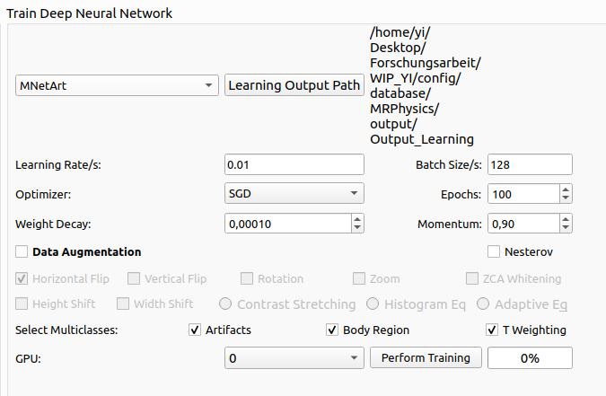
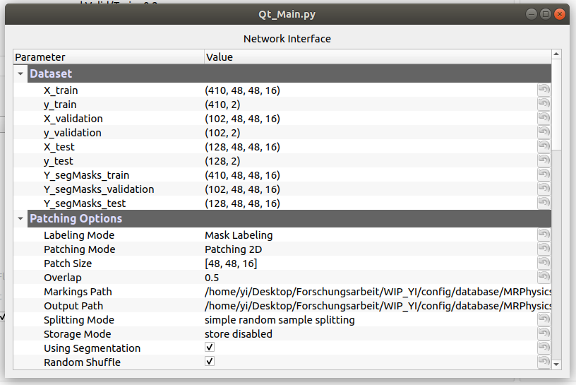

After you select datasets by either using the current datasets or selecting from path, the network training section on the window will be enabled. You can choose a neural network in the drop down box. If the desired model is not in the list, you can click add new architecture at the bottom in the network list to load a prepared architecture from path 'networks'. Then, you can select if you want to use data augmentation and which methods to deploy. Further, you can select batchsize and number of epochs for training neural network. Besides, you can choose the optimizer and number of GPU in the corresponding drop down box. When every options are ready, you can start Perform Training neural network. Then an individual network interface will pop up showing all the information in a structured list, including parameters and paths. After the neural network is compiled, it will start training process. After each epoch, there will be two diagrams showing the development of accuracy and loss for both training and validation in the area of Training Performance. All the files will be saved, including checkpoints, model in the format of HDF5, model weights, model architecture in the format of PNG, training datasets and training information.
Figure 4:
Perform Training
|
 |
Figure 5:
Network Interface
|
 |